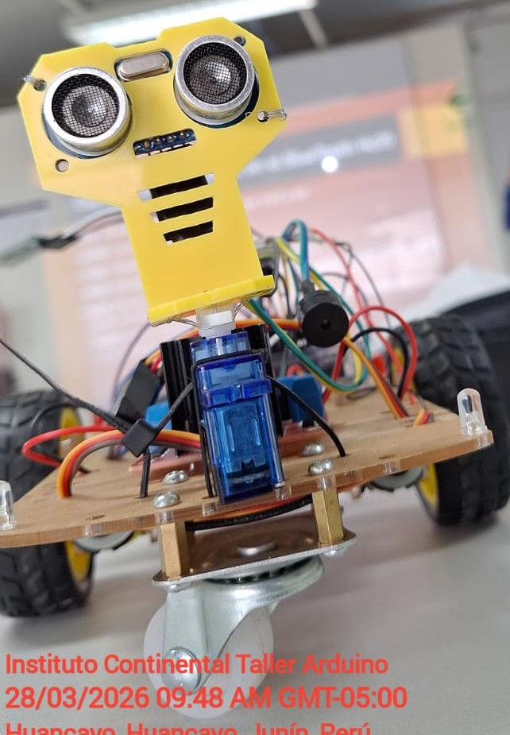
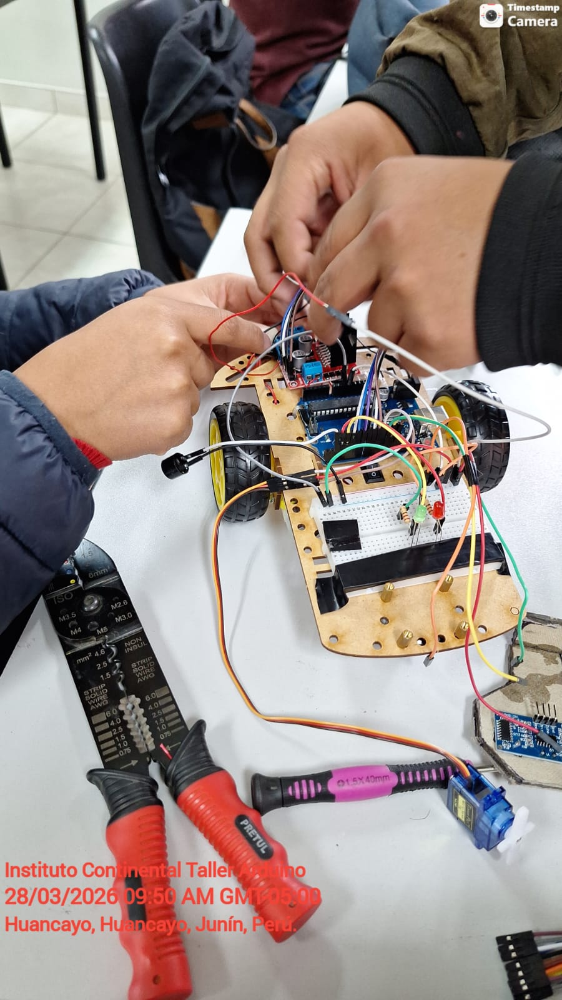
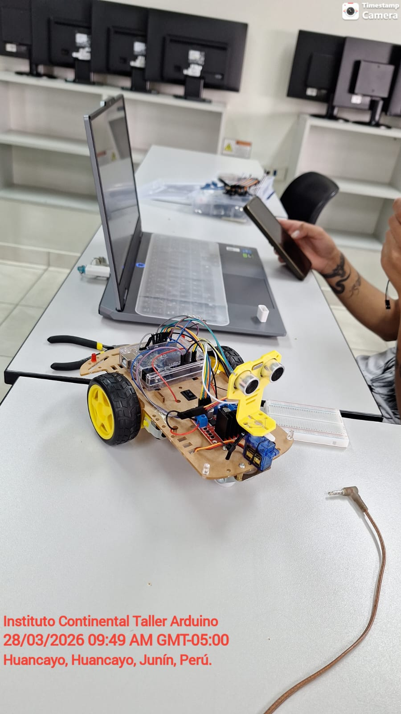

Descripción del Proyecto
Este proyecto tiene como objetivo desarrollar un robot móvil autónomo basado en la plataforma Arduino Nano. El carrito, construido sobre un chasis acrílico de dos motores (2WD), utiliza un sensor ultrasónico frontal (que se asemeja a dos ojos amarillos) para medir la distancia a los objetos.
Cuando el carrito avanza sin detectar obstáculos, enciende luces LED (por ejemplo, blancas o azules) para indicar su movimiento. Si el sensor ultrasónico detecta un objeto a una distancia crítica, el carrito se detiene, activa luces de alerta rojas y realiza una maniobra (usualmente un giro o una reversa) para evitar el obstáculo, todo controlado por un micro servo que orienta el sensor.
El cerebro del sistema es un Arduino Nano montado sobre un chasis con un controlador de motores (driver) y una placa de circuito, como se observa en la foto de referencia.
Flujo de Funcionamiento
- Encendido y arranque del sistema.
- El carrito inicia su movimiento hacia adelante.
- Encendido de luces LED indicativas de movimiento (blancas/azules).
- El sensor ultrasónico escanea constantemente el frente.
- Si se detecta un obstáculo a corta distancia, el carrito se detiene.
- Activación de las luces de alerta rojas brillantes.
- El micro servo gira el sensor ultrasónico para evaluar las rutas a los lados (izquierda/derecha).
- Giro o maniobra de evasión según la mejor ruta.
- Vuelta al modo de movimiento hacia adelante y cambio de luces.
Características Destacadas
- Chasis acrílico transparente de dos motores (2WD) para tracción.
- Rueda loca delantera para facilitar los giros.
- Sensor ultrasónico HC-SR04 para detección precisa de distancia.
- Micro servo SG90 para orientación del sensor ultrasónico.
- Controlador de motores DC.
- Sistema de luces LED inteligente (Blancas/Azules para avance, Rojas para obstáculos).
- Alimentación por batería de 9V o Li-Po.
- Programación compatible con Arduino IDE.
- Plataforma educativa para aprender electrónica, robótica y programación C++.
Evidencia Visual

Kit ensamblado del carrito 2WD, con sensor ultrasónico, servo y chasis acrílico.
Carrito avanzando con luces de marcha blancas activadas (simuladas).
Detección de un obstáculo mediante el sensor ultrasónico frontal. Luces de alerta rojas encendidas tras la detección y maniobra de evitación.
Luces de alerta rojas encendidas tras la detección y maniobra de evitación.
Tecnologías Utilizadas
- Arduino Nano / Uno
- Chasis acrílico 2WD
- Motores DC con reductora
- Driver de motor L298N o compatible
- Sensor ultrasónico HC-SR04
- Micro servo SG90
- LEDs (Blancos, Rojos)
- Batería y portabaterías
- Código C++ (Arduino IDE)
Código
Fragmentos representativos del código Arduino para el control de los motores, la lectura del sensor ultrasónico, la lógica de evitación de obstáculos con el servo, y el control de las luces LED para los diferentes estados de movimiento.